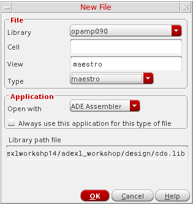

1
Getting Started with Virtuoso ADE Assembler
Introducing Virtuoso® ADE Assembler
Virtuoso® ADE Assembler is an interactive, multi-test environment that is designed to pull together all the parts of the design to begin centering the design for manufacturing. After testing and tuning the performance of individual blocks in Virtuoso ADE Explorer, you can port the tests for different blocks into Virtuoso ADE Assembler to test them together under a multitude of conditions and to check how they interact with each other in the design.
In Virtuoso ADE Assembler, you can consolidate tests for multiple blocks of a design, including the variables, device parameters, corners, checks and assertions, along with their specifications. Here, you can apply an extensive set of analyses to push the blocks and the overall design to its limits.
The Virtuoso ADE Assembler environment allows you to do the following:
- Create a new test in Virtuoso ADE Assembler or bring in an existing test that is already defined and verified by using Virtuoso ADE Explorer, Virtuoso Analog Design Environment L, or Virtuoso Analog Design Environment XL.
-
Define and place design variables (including equations) on the schematic elements
The simulator evaluates the variables and equations, automatically passing the modified values down through the schematic hierarchy. You can archive important aspects of your design with your schematic, which can contain both design equations and circuit topology details. - Annotate the schematic with DC voltages and transistor operating point information
- Specify device constraints and commands to control the simulation environment
- Move tests to and from Virtuoso ADE Explorer for detailed debugging.
-
The environment supports the following Cadence circuit simulators:
Alternatively, you can integrate your own third-party simulator using the Open Analog Simulator Interface Socket (OASIS) Direct. See your local Cadence representative for more information and to request a copy of the OASIS Direct Integrator's Guide. - Set up and run various analyses:
- View waveforms and perform post-processing tasks on your simulation results using Virtuoso Visualization and Analysis XL
- Generate datasheets
- View and manipulate your active setup as well as histories or checkpoints from previous runs
- Backannotate parameter values to schematic
- Create run plans. In a run plan, you can create multiple variations of the active setup and run them in a single click. This feature enables the support for regression using SKILL functions in Virtuoso ADE Assembler.
- Integrate third-party calculators and waveform viewers into your Virtuoso ADE Assembler environment
- Customize your user interface (see the Virtuoso Design Environment User Guide)
Licensing Requirements
Virtuoso ADE Assembler requires the 95260, Virtuoso ADE Assembler license.
Additionally, you can use the 95290, Virtuoso Simulation Expansion Option license to enhance your existing setup to run more simulation jobs in parallel. This license enables simulation of additional 400 jobs in the existing setup. For every increment of 400 jobs, a separate instance of this license can be checked out, which is released after all the jobs and simulations are completed. These increments of 400 jobs are allocated per GUI process or simulation service, which means that if multiple GUI processes are launched, the jobs started by these GUI processes are not accumulated with one process but distributed evenly.
This license is especially helpful in cases when many jobs cannot be run in parallel due to technical limitations, such as NFS, machine load, or more.
- Without this license, you can run a maximum of 399 jobs in parallel using one GUI process.
- With one license, you can run 799 (399 + 400) jobs in parallel using one GUI process.
- Similarly, with two licenses, you can run 1199 (399+400+400) jobs in parallel using one GUI process.
In case of multiple GUI processes that individually run less than 400 jobs, no license is checked out and all simulations continue to run in parallel. The license is checked out only when the jobs from a GUI process reach the count of 400.
You would require additional licenses to run:
- Resimulations with layout-dependent effects (LDEs) as described in Chapter 13 of this user guide. For more details, refer to License Requirements for Running Simulations with LDE.
- Resimulations as part of the electrically aware design flow described in the Virtuoso® Electrically Aware Flow Guide
- Resimulations as part of the voltage dependent rules flow described in the Virtuoso® Voltage Dependent Rules Flow Guide
Virtuoso_Layout_Suite_EAD) is already checked out as part of the Electrically Aware Design flow, 95510 is not required.For information on licensing, see Virtuoso Software Licensing and Configuration Guide.
Getting Started in the Virtuoso ADE Assembler Environment
You can launch Virtuoso ADE Assembler from the
The Virtuoso ADE Assembler environment consists of a set of menus, toolbars and assistant panes that make up your
See the following topics for more information about the Virtuoso ADE Assembler environment:
- Launching ADE Assembler
- ADE Assembler Environment at Startup
- ADE Assembler Environment User Interface
- Specifying the Run Mode
- Specifying Options for Saving Simulation Results
- Specifying Results Database Location
One you have created a test setup cellview, you can open it in the usual ways. See
Launching ADE Assembler
To start the ADE Assembler environment, start the Virtuoso Design Environment and do one of the following:
|
To open the environment from the CIW and create a new cellview |
The New File form appears.

The ADE Assembler environment is displayed. |
The Open File form appears. |
|
|
To open the environment from the schematic and create a new maestro cellview |
The Launch ADE Assembler form appears.
|
The Launch ADE Assembler form appears.
|
|
|
To open the environment from the CIW without first selecting a design |
The Launch ADE Assembler form appears. From this form, you can create a new test setup or open an existing test setup. See Using the Launch ADE Assembler Form for more information. |
Using the Launch ADE Assembler Form
The Launch ADE Assembler form appears when you do one of the following:
- Choose Tools – ADE Assembler in your Command Interpreter Window (CIW).
-
Choose Launch – ADE Assembler in your schematic editing window.
From this form, you can create a new test setup or open an existing test setup. See the following sections for information about getting started with any of these tasks:
Creating a New Setup
To create a new setup, do the following:
- On the Launch ADE Assembler form, select Create New View.
-
Click OK.
The Create new ADE Assembler View form appears.
- In the Library Name drop-down list, select a library.
- In the Cell Name field, type a cell name for your testbench.
-
In the View Name field, type a view name for your test setup.
The default ADE Assembler view name and view type ismaestro. For more information about the maestro view, see Directory Structure of a Maestro Cellview. - Verify that ADE Assembler appears in the Open with drop-down list.
- (Optional) Select the Always use this application for this view type check box if you want the program to use ADE Assembler when opening a view that is the same as what you specified in the View Name field.
-
In the Open in field, do one of the following:
-
Click OK.
The ADE Assembler environment appears. For more information, see ADE Assembler Environment at Startup and ADE Assembler Environment User Interface.
You can begin specifying your tests and analyses. See Chapter 2, “Specifying Tests and Analyses” for more information.
Opening an Existing Setup
To open an existing setup, do the following:
- On the Launch ADE Assembler form, select Open Existing View.
-
Click OK.
The Open ADE Assembler View form appears. - Use the Library Name, Cell Name, and View Name fields to select your setup.
-
Verify that
ADE Assemblerappears in the Open with drop-down list. - (Optional) Select the Always use this application for this view type check box if you want the program to use ADE Assembler when opening a view that is the same as what you specified in the View Name field.
-
(Optional) The Open for field indicates that the maestro view will be opened in edit mode by default. Select read to open the maestro view in read-only mode.
The ADE Assembler title bar displays the text Editing if the ADE Assembler view is opened in edit mode. The ADE Assembler title bar displays the text Reading if the view is opened in read-only mode. For more information about working with ADE Assembler views in read-only mode, see Working with Read-Only or Editable maestro Views. -
In the Open in field, do one of the following:
-
Click OK.
The ADE Assembler environment appears.The cellviews saved from both ADE Explorer or ADE Assembler are of type maestro, and can be opened in either one of these applications. Virtuoso remembers the application that was last used to save each maestro cellview and by default, opens the view in the same application next time. However, you can still open a maestro cellview in a specific application by using theOpen withcommand.
If you saved a maestro view using ADE Assembler, but now you want to open it in ADE Explorer, right-click the view name and choose Open with. The Open File form appears with the name of the selected library, cell, and view displayed in it. In the Open with drop-down list, selectADE Explorer. If the cellview contains multiple tests, Virtuoso displays the Choose a Test form that shows a list of tests available in that view. Since ADE Explorer can show only a single test, select the name of the test you want to open in ADE Explorer and click OK to open the view. For more details, refer to Modifying a Test in ADE Explorer.
ADE Assembler Environment at Startup
This section describes how the ADE Assembler environment appears on startup.
If you open a new cellview in ADE Assembler. the Welcome to Virtuoso ADE Assembler start page is displayed. For more information about the Welcome to ADE Assembler start page, see The Welcome to ADE Assembler Page.
-
The Outputs pane is displayed if you open an existing setup using the procedure described in Opening an Existing Setup.
-
The ADE Assembler environment is displayed in a new tab if you choose Launch – ADE Assembler in your schematic editing window and created a new setup or opened an existing setup using the procedures described in Creating a New Setup or Opening an Existing Setup.
The tab for the schematic design displays the name of the cell for the schematic design. The tab for the ADE Assembler environment displays the name of the maestro cellview. For more information about working with tabs, see the Virtuoso Design Environment User Guide. -
In the tab for the schematic design, the ADE Assembler and Parasitics menus appear on the menu banner. You can access ADE Assembler related commands from the ADE Assembler menu. For more information, see Menu Bar. The Parasitics menu lets you access Virtuoso Parasitic Aware Design to investigate the effects of parasitics on your circuits. For more information, see the Virtuoso Parasitic Aware Design User Guide.
For information about the user interface in the ADE Assembler environment, see ADE Assembler Environment User Interface.
ADE Assembler Environment User Interface
The Assembler user-interface provides various menus, toolbars, and assistants that can be used to configure a multi-test environment, manage simulation set up, run simulations, and view results.
This section describes the following parts of the ADE Assembler environment user interface:
- The Welcome to ADE Assembler Page
- Menu Bar
- Context-Sensitive Menus
- Toolbars
- Assistant Panes
- Outputs
- Workspaces
The Welcome to ADE Assembler Page
The Welcome to ADE Assembler page provides an overview of ADE Assembler and guides you through the basic setup tasks in ADE Assembler. You can click a hypertext link in the start page to open the form corresponding to a setup task.
The welcome page is displayed if you do one of the following:
- Create a new setup using the procedure described in Creating a New Setup.
- Choose Window – Welcome to ADE Assembler.
- Choose ( ) on the Browse toolbar.
Menu Bar
The menu bar in ADE Assembler has the following menus. You can also access these menus from the ADE Assembler menu that appears on the menu banner in the tab for the schematic design.
File
The options in the File menu are described below:
| File Menu Options | Description |
|---|---|
|
Opens the
This is the same form that appears when you launch ADE Assembler from the CIW and create a new cellview.
|
|
|
Opens the |
|
|
Opens the Save a Copy form so you can save a copy of the current ADE Assembler setup database to a different location. |
|
|
Opens the |
|
|
Opens the Save Setup State form so you can save a copy of the current ADE Assembler setup database For more information, see Creating or Updating a Setup State. |
|
|
Opens the Load Setup State form so you can load an existing setup state. For more information, see Loading a Setup State. |
|
|
Opens the Remove Setup State form so you can delete an existing setup state. For more information, see Deleting a Setup State. |
|
|
Opens the Import Setup form so you can import settings from an existing ADE Assembler setup database. For more information, see Importing the Simulation Setup. |
|
|
Opens the Import Histories form and lets you import histories from one cellview to another. By doing this, you can bring together histories from different cellviews that have the same simulation setup and were used to run different verifications. |
|
|
Lets you switch between read-only and edit modes. For more details, see Working with Read-Only or Editable maestro Views. |
|
|
Allows you to bookmark design views and return to them during the current or future sessions.
For information on bookmarks, see |
|
Create
The options in the Create menu are described below:
| Create Menu Options | Description |
|---|---|
|
Opens the ADE Explorer so that you can add a new test For more information, see Chapter 2, “Specifying Tests and Analyses.” |
|
|
Opens the For more information, see Chapter 6, “Working with Corners” |
|
|
Opens the Choose Documents to be Added form so that you can select the documents to be added to the maestro view. For more information, see Chapter 23, “Working with Documents and Datasheets.” |
|
|
Opens the Save Setup State form so you can save a copy of the current ADE Assembler setup database For more information, see Creating or Updating a Setup State. |
|
|
Opens the Create Datasheet form so you can create a datasheet for the history item selected in the History tab of the Data View assistant pane. For more information, see Creating a Datasheet for a History. |
|
|
Opens the Spec Summary form so you can view the specifications summary for the results of a simulation run. For more information, see Working with Specifications. |
|
|
Opens the Spec Comparison form so you can compare measured results of output expressions for: |
Tools
The options in the Tools menu are described below:
| Tools Menu Options | Description |
|---|---|
|
Opens the |
|
|
Opens the |
|
|
Opens the |
Options
The options in the Options menu are described below:
| Options Menu Options | Description |
|---|---|
|
Opens the |
|
|
Opens the |
|
|
Opens the |
|
|
Opens the |
|
Run
The options in the Run menu are described below:
| Run Menu Options | Description |
|---|---|
|
Run simulations across multiple tests with sweeps and corners analyses. |
|
|
Runs a simulation using the Monte Carlo method and sampling options. For more information, see Monte Carlo Analysis. |
|
|
Perform global optimization using a parallel simulated annealing algorithm For more information, see Running a Global Optimization |
|
|
For more information, see Running a Local Optimization. |
|
|
Performs an optimization run to improve the yield of your design. For more information, see the Virtuoso Variation Option User Guide. |
|
|
Uses worst case distance algorithm to estimate yield for circuits with high yields. Decreases the number of simulations required to estimate yield when compared with Monte Carlo simulation.
For more information, see |
|
|
Performs sensitivity analysis. For more information, see Sensitivity Analysis. |
|
|
Uses sensitivity analysis to identify worst case corners for each design specification and adds those corners to the Corners Setup form. For more information, see Worst Case Corners. |
|
|
Lets you tune your design by varying the values of parameters, running multiple simulations, and then comparing results. For more information, see Performing Manual Tuning |
|
|
For more information, see Working with Run Plan |
|
|
Optimizes test benches over a large number of corners. For more information, see Sizing Over Corners |
|
|
Stops all jobs you started during the current session regardless of their current state (started, getting configured, running). |
EAD
The EAD menu helps to enable the Electrically Aware Design flow in Virtuoso and configure settings to save the electrical data.. The options available in this menu are described below:
| Options Menu Options | Description |
|---|---|
|
For more information, see |
|
|
Opens the design schematic in a new tab and displays the Parasitics & Electrical Setup assistant to enable selection of signals for the EAD flow.
For more information, see |
Parasitics/LDE
The Parasitics/LDE menu lets you investigate the effects of parasitics and Layout Dependent Effects (LDEs) on your circuits. You can report on parasitics that exist in your design, show or hide them on your design, and create refined extracted cellviews.
For more information, see the following links:
Window
The options in the Window menu are described below:
| Options Menu Options | Description |
|---|---|
|
Displays the Welcome to ADE Assembler start page. For more information, see The Welcome to ADE Assembler Page. |
|
|
Displays or hides the selected assistant pane For more information about assistant panes, see the Virtuoso Design Environment User Guide. |
|
|
Displays the selected workspace
For more information about workspaces, see |
|
|
Displays or hides the selected toolbar You can also customize toolbars to regroup the commands as required. For more information about customizing toolbars, see the Virtuoso Design Environment User Guide. |
|
|
Allows you to work with tabs in the session window For more information about working with tabs, see the Virtuoso Design Environment User Guide. |
Help
The options in the Help menu for ADE Assembler.
Context-Sensitive Menus
ADE Assembler provides context-sensitive menus for various UI elements to provide a quick access to the commands relevant to those element. For example, the context-sensitive menu for a
Similarly, the context-sensitive menu for the
Customizing the Context-Sensitive Menus
ADE Assembler provides you the flexibility to modify the context-sensitive menus to keep only the commands you use or to change their order to keep the most used commands on top.
- A test in the Data View assistant
- The Outputs Setup tab
- The Detail results view
- The Detail - Transpose results view
To customize the context-sensitive menu for any of the elements mentioned above, you can use the Customize Menus command given at the bottom of that menu.
For example, to customize the context-sensitive menu for the Results tab, right-click anywhere on this pane and choose Customize Menus. The Customize Menu form is displayed, as shown below.
Observe the various components of the Customize Menu form.
You would notice the following points:
- The form name dynamically displays the name of the UI element for which you have chosen to customize the menu. In the example shown above, the form name includes Results, which indicates that the context-sensitive menu is for the Results tab.
- The form displays all the commands that are currently available in the menu being customized. The commands are ordered in the same way as they are available in the menu.
-
A menu can contain various submenus. You can view and modify the commands available in the submenus by selecting the submenu name from the Choose a menu to reorder drop-down list. The contents of this list are also specific to the context-sensitive menu being customized.
Alternatively, you can double-click the submenu name in the list of commands on the Customize Menu form to view its commands.
To customize a context-sensitive menu or its submenu, display the list of commands of that menu and do one or more of the following:
After customizing a context-sensitive menu, click OK on the Customize Menu form to
Adding a Command
To add a command, click Add on the Customize Menu form. The Add Menus form is displayed.
The Choose an item to add list displays all the commands that can be added to the menu being customized. Select the name of the command you want to add and click Apply. If required, you can resize the form vertically to view the complete list of available commands.
Click OK to close the form. The added commands are now visible in the list of commands on the Customize Menu form.
At any time, you can click Defaults to ignore all the customization done and restore the default menu setup set in ADE Assembler.
If your custom menus do not appear as expected when added through the Customize Menu form, the customization file could be corrupted. In that case, delete the menu customization files that are saved in the .cadence/RMBCustomization directory and are named after the tab or context menu you have modified. For example, Data View - Tests, Results, or Outputs Setup. However, this will also delete any other menu customizations for that menu and the default settings will be used.
.menus file saved at the <Virtuoso-installation-dir>/tools/dfII/etc/tools/menus/ path. After that, the command will be available at the bottom of the menu and can be rearranged as required.Removing a Command
To remove a command from the menu, select the name of that command in the list of available commands. Click Delete. The command is removed from the list of commands visible in the menu. It is also possible to remove a separator from the menu.
The command once removed will still remain available in the Add Menus form and can be added back when required.
Changing the Order of Commands
To rearrange the commands in the menu, select a command in the list of available commands. Click Move Up or Move Down, as required, to move the command to some other place in the list.
.cadence/RMBcustomization/ directory. The name of the file is same as that of the corresponding pane. For example, the customized context-sensitive menu for a test in the Data View assistant is saved in a file named Data View - Tests. The path where to save this setting file is decided by setup.loc file, which is an ASCII file that specifies the locations to be searched and the order in which they should be searched. For more information about the setup.loc file or how to edit the search order, see Cadence Setup Search File: setup.loc in the Cadence Application Infrastructure User Guide.
If you delete a settings file from the .cadence/RMBcustomization/ directory, the corresponding context-sensitive menu takes the default settings.
Toolbars
ADE Assembler has the following toolbars:
File
| Icon | Name | Description |
|---|---|---|
|
|
Opens the |
|
|
|
Opens the |
|
 |
||
|
|
Opens the |
Create
| Icon | Name | Description |
|---|---|---|
|
|
Opens the ADE Explorer so you can add a new test For more information, see Chapter 2, “Specifying Tests and Analyses.” |
|
|
|
Opens the For more information, see Chapter 6, “Working with Corners” |
|
|
|
Opens the Choose Documents to be Added form so you can select the documents to be added to the ADE Assembler view. For more information, see Chapter 23, “Working with Documents and Datasheets.” |
|
|
|
Opens the Save Setup State form so you can save a copy of the current ADE Assembler setup database For more information, see Creating or Updating a Setup State. |
|
|
|
Opens the Create Datasheet form so you can create a datasheet for the history item selected in the History tab of the For more information, see Creating a Datasheet for a History. |
|
 |
Opens the Spec Summary form so you can view the specifications summary for the results of a simulation run. For more information, see Working with Specifications. |
|
|
|
Opens the Setup Library assistant that you can use to work with setup libraries in ADE Assembler. For more information, see Working with the Setup Library Assistant. |
|
 |
Opens the Run Plan assistant that provides the capability to create multiple variations of the setup within a single session. For more information, see Working with Run Plan. |
|
 |
Opens the Spec Comparison form so you can compare measured results of output expressions for:
For more information, see Comparing Results Using the Spec Comparison Form. |
Browse
| Icon | Name | Description |
|---|---|---|
|
|
Displays the Welcome to ADE Assembler start page. For more information, see The Welcome to ADE Assembler Page. |
Go
The Go toolbar allows you to do the following:
- Sequentially or non-sequentially navigate through a cellview hierarchy.
- Navigate between cells and views in various designs.
For more information about the Go toolbar, see the Virtuoso Design Environment User Guide.
Parasitic Mode
For more information about the Parasitics Mode toolbar, see the Virtuoso Parasitic Estimation and Analysis User Guide.
Reference History
| Icon | Name | Description |
|---|---|---|
|
Lets you select the reference history item for incremental simulation runs. For more information, see Running an Incremental Simulation to Reuse Results. |
||
 |
Opens the |
|
|
|
Opens the |
Run
| Icon | Name | Description |
|---|---|---|
|
Specifies the run mode for simulation For more information, see Specifying the Run Mode. |
||
 |
Opens a form for specifying the simulation options for the run mode selected in the Select a Run Mode drop-down list. |
|
 |
Runs the simulation for the run mode selected in the Select a Run Mode drop-down list. You can observe variants of this command in the following situations:
|
|
 |
 : When the
: When the Setup
| Icon | Name | Description |
|---|---|---|
|
|
Opens the Load Setup State form so you can load an existing setup state. For more information, see Loading a Setup State. |
|
|
|
Opens the Save Setup State form so you can save a copy of the current ADE Assembler setup database For more information, see Loading a Setup State. |
Tools
| Icon | Name | Description |
|---|---|---|
|
|
Opens the |
|
|
|
Opens the |
|
|
|
Opens the |
|
|
|
Workspaces
The Workspaces toolbar allows you work with workspaces. For more information, see
Assistant Panes
The following assistant panes are available in ADE Assembler:
- Variables and Parameters
- Run Summary
- Setup DB Viewer
- Data View
- Variable Display
- Fault Setup assistant
- Setup Library assistant
- Run Plan
- Parasitic Filters
- Parasitics and Electrical Setup
- Compare Parasitics Report
Variables and Parameters
The Variables and Parameters assistant pane allows you to view and set up design variables, global variables and parameters.
To display the Variables and Parameters assistant pane, do the following:
For information about using the Variables and Parameters assistant pane, see the following:
| To use the Variables and Parameters pane to work with | See |
|---|---|
|
Chapter 4, “Working with Global Variables” Chapter 3, “Working with Design Variables and Instance Parameters” |
|
Run Summary
The Run Summary assistant pane displays a summary of the simulation setup and the status of simulation runs.
To display the Run Summary assistant pane, do the following:
For information about using the Run Summary assistant pane, see the following:
Setup DB Viewer
The Setup DB Viewer assistant pane provides a graphical view of the ADE Assembler setup database.
To display the Setup DB Viewer assistant pane, do the following:
For information about using the Setup DB Viewer assistant pane, see Viewing Histories.
Data View
The Data View assistant provides a single user interface to quickly view and set up commonly used setup data.
The Data tab on the Data View assistant pane helps you quickly view and set up tests, global variables, parameters, corners, device checks and asserts, and manage documents and setup states.
The data tab contains the following two columns:
- Name: It includes the names of the setup elements, such as variable, parameter, corner, and so on.
- Value: It includes the values of the elements defined in the setup.
These columns are separated through a divider bar that you can drag to change the width of the columns. The width of the divider bar can also be controlled by the nameDisplayWidthInDataView .cdsenv variable.
These columns provide search filters that you can use to filter the data based on the specified criteria. You can configure and use these filters in the same way as done for the Setup Assistant in ADE Explorer. For more details, refer to
Related environment variables:
The History tab on the Data View assistant pane allows you to work with history items.
For information about using the Data View assistant pane, see the following:
| To use the Data View assistant pane to work with | See |
|---|---|
|
Chapter 4, “Working with Global Variables” Chapter 3, “Working with Design Variables and Instance Parameters” |
|
Fault Setup
The fault Setup assistant allows you to define a set of faults that you want to consider while running the fault simulation.
For more details, refer to Working with the Setup Library Assistant.
Setup Library
The Setup Library assistant helps you define a project-specific (master) setup for the design blocks in ADE Assembler and then reuse the specified setup to create or modify the current simulation setup in the Data View assistant. The setup in this assistant is generic and can be applied on any design.
For more details, refer to Working with the Setup Library Assistant.
Run Plan
The Run Plan assistant allows you to create multiple variations of the setup within a single session, where each run has its own setup details that override the settings in the active setup. Simulations can be run for all the runs in a session together with a single click and their results are generated simultaneously.
For more details, refer to Working with Run Plan.
Variable Display
The Variable Display assistant pane displays the current, minimum and maximum value set for each variable and parameter for the selected design point.
To display the Variable Display assistant pane, do the following:

For more information about the Variable Display assistant pane, see Showing Variable and Parameter Values for Design Points on the Results Tab.
Parasitic Filters
For more information about the Parasitic Filters assistant pane, see the Virtuoso Parasitic Estimation and Analysis User Guide.
To display the Parasitic Estimates assistant pane, do the following:
Parasitics and Electrical Setup
For more information about this assistant pane, see the Virtuoso Parasitic Aware Design User Guide and
Compare Parasitics Report
For more information about the Parasitics Report assistant pane, see the Virtuoso Parasitic Estimation and Analysis User Guide.
To display the Compare Parasitics Report assistant pane, do the following:
Outputs
The Outputs pane allows you to setup simulation outputs and view results and diagnostics information. This pane contains the following four tabs:
Outputs Setup
The Outputs Setup tab of the Outputs pane allows you to specify nets, terminals, and measurements you want to save and plot. For more information about using the Outputs Setup tab, see Chapter 10, “Selecting Data to Save and Plot.”
Run Preview
The Run Preview tab provides a summarized view of all the settings applied in the current ADE Assembler view.
By default, this tab is not visible. To view it, right-click next to the Results tab title and choose Run Preview.
Results
The Results tab of the Outputs pane allows you to view simulation results. For more information about using the Results tab, see Chapter 19, “Viewing, Printing, and Plotting Results.”
Workspaces
The following workspaces are available in ADE Assembler:
For more information about workspaces, see
Basic Workspace
The following panes appear in the Basic workspace:
Outputs Workspace
The Outputs workspace displays only the Outputs pane.
Specifying the Run Mode
A run mode specifies the type of simulation you want to run in ADE Assembler.
You can choose a run mode to be used for simulation from the Run menu. Alternatively, you can select a run mode in the Select a Run Mode drop-down list.
Simulators Supported for Run Modes
The following simulators are supported for the Single Run, Sweeps and Corners, Global Optimization, Local Optimization, Sensitivity Analysis, Feasibility Analysis and Size Over Corners run modes:
- spectre (Spectre circuit simulator)
- aps (Spectre Accelerated Parallel simulator)
- UltraSim (Virtuoso UltraSim simulator)
- hspiceD (HSPICE simulator from Synopsys, Inc)
- ams (Spectre AMS Designer Simulator)
The following simulators are supported for the Monte Carlo Sampling run mode:
- spectre (Spectre Circuit Simulator)
- aps (Spectre Accelerated Parallel simulator)
- hspiceD (HSPICE simulator from Synopsys, Inc)
-
ams (Spectre AMS Designer simulator with Spectre or APS as the solver.
Note the following:- Ensure that you are using the Cadence IUS 9.2 or later version of Spectre AMS Designer.
- You cannot use Spectre AMS Designer Simulator with UltraSim as the solver to run Monte Carlo analysis.
- Running Monte Carlo simulation in interactive mode (using SimVision) is not supported with the AMS Designer simulator.
Specifying Options for Saving Simulation Results
By default, the simulation results information is saved to libraryName/cellName/maestro/results/data/history_item in the location specified using the asimenv.startup projectDir environment variable. The default setting for this environment variable is $HOME/simulation.
To specify the options for saving simulation results and a different location where you want the program to save the simulation results, do the following:
-
In the ADE Assembler session window, choose Options – Save.
The Save Options form appears.
-
In the Simulation Results group box, specify what all simulation data must be saved.
By default, Save Simulation Data and Save Netlist options are selected. The default selection saves the simulation results and the netlist data are saved for all the design points.- Select one of the following options from the Save Simulation Data drop-down list:
-
To save only the simulation data for points with evaluation errors, select Save Data for Eval Errors. Alternatively, set the environment variable
saveEvaluationErrorResultstot.
This check box can be used only when either of the following conditions is met.- Save Simulation Data is deselected manually.
-
The specified run mode is Monte Carlo Sampling.
In this case, Save Simulation Data is deselected automatically. Monte Carlo mode lets you use the Save Waveforms (Simulation Data) check box in the Monte Carlo form to control the simulation data to be saved.
- To save only the simulation results, but not the netlist for each design point, deselect Save Netlists and select only the Save Simulation Data option. When this option is selected, the point-specific netlist data is not saved and the netlist directory for every point is replaced with a symbolic link to the reference netlist directory. This combination of save options is useful in saving space when the netlist for each design point is large and space-consuming.
-
By default, the results for distributed simulation runs are saved in the location specified in the Simulation Results Directory Location field. To save the results for distributed simulation jobs run on a remote system in a local directory on that system, select the Use Local Simulation Results Directory check box and specify the path to the local directory.
Note the following:- You must ensure that the specified local directory path exists on all the remote systems on which a distributed simulation is run.
- If this option is set, you can view the simulation results in the Results tab. However, you cannot plot the results, re-evaluate expressions, or annotate simulation results to the schematic.
-
The results saved on remote systems will not be deleted if you delete the corresponding history items. You must manually delete the directories containing the results on remote systems.
-
In the Simulation Results Directory Location field, specify the directory path where you want the program to write your simulation results information.
If your design library is set up as read only, you can use this field to specify a writable location. -
Click OK.
The program writes simulation results information to libraryName/cellName/maestro/results/data/<history_item>in the specified directory.
If you do not specify a simulation results location, but specify a results database location (see Specifying Results Database Location), the program writes this information to libraryName/cellName/maestro/results/data/<history_item>in the results database location.
- Directory Structure of a Maestro Cellview
- Specifying Results Database Location
- Specifying How Many Histories to Save
- Overwriting a History Item during Subsequent Simulation Runs
- Working with Read-Only or Editable maestro Views
Specifying Results Database Location
By default, the program writes the results database and run log files to libraryName/cellName/viewName/results/data in the ADE Assembler view. For more information about the maestro view, see Directory Structure of a Maestro Cellview.
To specify a different location where you want the program to save the results database and run log files, do the following:
-
In the ADE Assembler session window, choose Options – Save.
The Save Options form appears.
-
In the ADE Assembler Results Database Location field, specify the directory path where you want ADE Assembler to write your results database information and run log files.
If your design library is set up as read-only, you can use this field to specify a writable location. -
Click OK.
The program writes results database information and run log files to libraryName/cellName/viewName/results/datain the specified directory.
If you do not specify a results database location, and you open the maestro view in read-only mode or you do not have write permissions in the maestro view, the program writes this information to libraryName/cellName/maestro/results/datain the location specified using the asimenv.startup projectDir environment variable. The default setting for this environment variable is$HOME/simulation. For more information, see Working with Read-Only or Editable maestro Views.
How does ADE Assembler save the results in the results database?
Earlier, ADE Assembler and the IC remote processes (ICRP) used to write to the .rdb file on the file system, which is usually an NFS disk. However, the NFS file locks, which are used to ensure database correctness, are slow. This used to impact the performance resulting in a non-responsive GUI during simulation and a lengthy simulation run time. In addition, simultaneous attempts to access the .rdb file by the ADE Assembler user interface and the ICRP increase the possibility of database corruption due to the unreliability of NFS file locking mechanism.
To avoid this, ADE Assembler now uses a local directory, named as /tmp, to temporarily save the results database. This avoids the NFS file lock issues and centralizes access to the .rdb file because it can be accessed only through the ADE Assembler UI. In addition, it uses a separate backup thread to copy the results data from the /tmp directory to the permanent results database, the location specified by the ADE Assembler Results Database Location field. ADE Assembler saves a .rdb file in the libraryName/cellName/viewName/results/data directory under the specified location.
Important Points to Note
-
ADE Assembler saves the .rdb file to the
/tmpdirectory on the same computer where the application is running. -
You can choose to save the results database directly in the
.rdbfile on the NFS disk instead of/tmpdirectory by setting the RDBCreatePolicy environment variable to"NFSDisk". By default, this variable is set to"TmpDir". -
If the continueICRPRunOnAbruptGUIExit environment variable is set to
t, ADE Assembler needs to continue the simulation run even if Virtuoso closes abruptly. In this case, it will wait for the successful copy of the data from/tmpto/RDB. While this data is being copied, Assembler checks for its successful completion status for a specific number of times specified by thecontinueICRPNumRetriesToWaitForGUIRecoveredResDBenvironment variable, which is by default set to20. If the success status is received, ADE Assembler continues the simulation run. If the success status is not received in the given number of checks, the simulation is not completed.
If the simulation data is large and the expected time for data copy is large, you can set thecontinueICRPNumRetriesToWaitForGUIRecoveredResDBvariable to a higher value. -
Only the ADE Assembler user interface can access
/tmp. Therefore, it is not required to be locked and released for every read or write operation, and database operations are also fast. -
The thread to backup the results from the
/tmpdirectory to the NFS disk runs at regular intervals of 50 seconds. This thread copies the data in small blocks. You can also specify the number of pages in each block to be copied by setting the RDBTmpDirDiskQuotaLowerLimitInMegabytes environment variables. - It is recommended not to keep RDBTmpDirDiskQuotaLowerLimitInMegabytes large to ensure that the temporary database is accessible to ADE Assembler.
-
If Virtuoso is closed abruptly due to some issue and all the data has not been copied to the results database, all the settings for block transfer and frequency of backup are ignored, and all the unsaved data is copied from the
/tmpdirectory to the results database. -
The availability of disk space for both
/tmpdirectory and the.rdbfile is checked periodically. If the available disk space becomes less than the lower limit, appropriate warning messages are flagged. If these disks do not have sufficient space, the simulation is automatically suspended, the simulation is automatically suspended. You can free up the space and resume the simulation.
Related environment variables: - When you close the ADE Assembler window, it runs a check to confirm that all the data from /tmp directory has been successfully copied to the .rdb results database. If some data remains to be copied, ADE Assembler waits before closing the window, and shows a message in the CIW.
- Directory Structure of a Maestro Cellview
- Specifying Options for Saving Simulation Results
- Specifying How Many Histories to Save
- Overwriting a History Item during Subsequent Simulation Runs
- Working with Read-Only or Editable maestro Views
Return to top